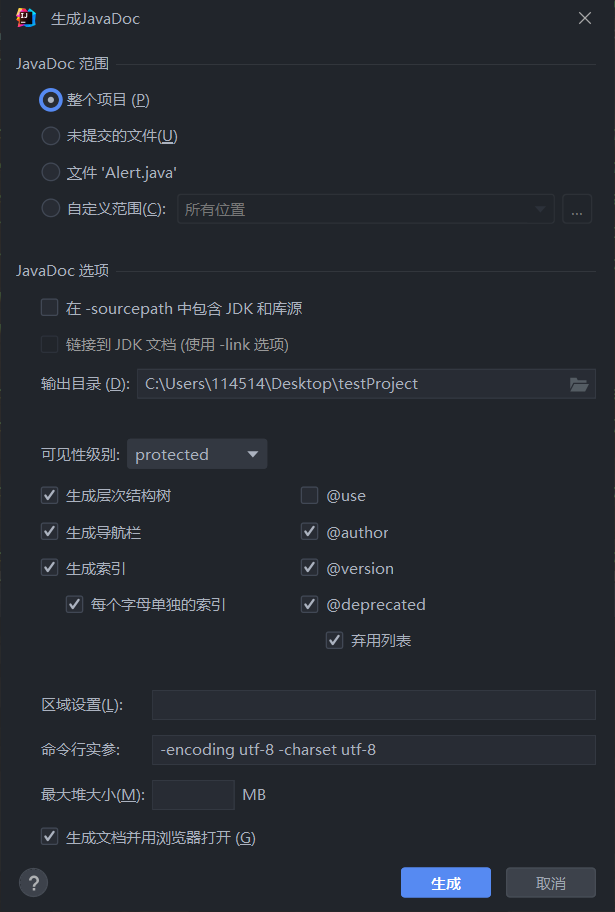

Javadoc简介
Javadoc是Sun Microsystems为Java语言创建的文档生成器，在Javadoc推出之前，程序开发者往往需要为每一个程序单独创建并更新一个文档，这种做法耗时耗力且极不方便，Javadoc的主要优点就是在于能够根据源代码的注释（为加以区分，此后称此文档为Javadoc注释）生成相应的html格式API文档（此后称此文档为Javadoc文档），这将帮助软件开发者或者使用者理解原代码。
本文旨在借助详实的案例，帮助对Javadoc注释编写没有经验的开发者快速了解并掌握规范的Javadoc注释编写方法。
Javadoc注释基本结构
Javadoc注释是一类特殊的注释，也是Javadoc文档生成的依据。在源代码中，Javadoc注释以/**开头，*/结尾的注释格式添加在需要注释的实体的声明前（可以是包、类、方法、对象等）。一个常见的错误是，对于某个类的Javadoc注释被填写在import语句之前，这将导致该注释无法被识别。对于某个模块或者某个包，其Javadoc注释一般在该模块/包目录下的module-info.java/package-info.java中。对于一个Javadoc注释块，其通常被分为主要说明（和文内标签）和标签块两个部分。
主要说明
主要说明(Main Description)其实与我们常见的普通注释是类似的，并没有什么格式要求，但是需要简要而准确地描述所注释实体（功能、特性等等）。
看下面一个例子（来自java.base模块的java.io包，以下案例若无特别说明，均出自JDK17源码）：
1 | /** |
需要注意两点：
- 在这个例子中，final变量
prefixLength和getPrefixLength方法的权限修饰符分别为private和默认(default)，这意味着在生成Javadoc文档时若把可见性级别设得太低（比如说public），那么在生成的Javadoc文档中是看不见这些权限高于public的对象或方法的。 - 这个例子中两个Javadoc注释都进行了换行，事实上这种换行并不会反映到生成的Javadoc文档当中，因此在编写Javadoc注释时不需要太在意换行，根据自己的习惯即可（当然，请在单词之间而不是单词中间换行）。除Javadoc注释块的首尾部分外，中间的前导
*也是可以省略的。
排版
如果有一个注释十分复杂，需要换行或是进行一定的排版，都可以在Javadoc注释中添加html标签来实现。看下面一个例子（有删减）：
1 | /** |
这是File类的一个构造器，可以看到其中使用了html标签<p>来标注换行。在Javadoc注释编写的过程中使用html标签都可以被识别并反映到生成的Javadoc文档中。
首句
在生成Javadoc文档中的Summary部分里，相应Description只会包含第一句的内容，也被称为首句(First Sentence)，因此请务必保证该句内容可以完整而准确地描述这个被声明的实体，同时尽量保证该句在80个字符以内。

需要注意的是，Javadoc对于首句的判定就是根据符号.以及之后的空格、制表位符或是换行符等，因此请在首个句点前完成描述（或者在句点后立刻添加其它符号，比如Prof. Zhang不会将Zhang纳入首句，而Prof.Zhang就可以）。
后续内容以及标签块将显示在Javadoc文档的Details部分中。
Javadoc标签
从上面File类构造器的例子中我们还可以看到，除了html标签外，还有一些其它标签，比如{@code File}、@param等等，这些标签就是Javadoc注释的标签（此后称为Javadoc标签），分为两类：文内标签(inline tag)和块标签(block tag)。接下来笔者将详细介绍常见的各个Javadoc标签的用法和效果：
文内标签
用花括号括起，穿插出现在主要说明或标签块之中的标签叫做文内标签，比如{@code File}就是文内标签。文内标签的作用通常是为主要说明中的部分内容添加样式或者效果。
{@code text} 代码样式
用代码样式显示相应的文本。与使用<code> </code>的html标签效果一致。
{@docRoot} 文档根
代表生成Javadoc文档的根目录。
1 | /** |
{@inheritDoc} 继承文档
从最近的继承类或者接口处继承文档，相当于进行了拷贝操作。{@inheritDoc}标签可以使用在主要说明块中，也可以使用在标签块中。使用该标签后可以进一步地添加说明。
1 | /** |
{@literal text} 文本样式
以文本样式显示原文本，其中的文本将不会被识别为html标记符号或者嵌套的Javadoc标签。
1 | /** |

{@link package.class#member label} 链接
插入一个文内链接，指向另一个实体的文档。@link标签后按照package.class#member的格式填写链接到的实体，如在同一类中，前面的package.class可省略，然后填写在Javadoc文档中实际显示的内容。
1 | /** |
{@value package.class#field} 值
代表某个常量的值。若不加参数，则显示为所注释的实体常量的值。
1 | /** |
块标签
块标签通常在主要说明之后的标签块内，另起一行并直接使用该标签作为开头。@param ...就是一个块标签。在生成的Javadoc文档中，块标签的内容也以特别的样式被显示出来。需要注意的是，标签块只能写在主要说明后，并按照以下顺序（只是建议，实践中至少保证块标签是在主要说明后的标签块中即可）：
@author 作者
该标签仅限添加在类和接口的Javadoc注释中。
@author标签后填写代码作者，有多个作者的情况可以以逗号隔开或者分多行填写（注意每行前都要添加@author）。这个标签通常而言并不重要，除非特别指明，作者一般不会显示在生成的Javadoc文档中。
1 | /** |
@version 版本
该标签仅限添加在类和接口的Javadoc注释中。
@version标签后填写代码版本。
1 | /** |
@param 形参
该标签仅限添加在方法和构造函数的Javadoc注释中。
@param标签后填写参数的名字（而非类型），然后再填写参数的详细描述。对于含有多个参量的方法，按照参量声明顺序添加标签。
1 | /** |
@return 返回值
该标签仅限添加在方法的Javadoc注释中。
@return标签后填写返回的内容，按规范除void方法和构造方法外都需要填写@return标签，就算可能有些多余。在实践中，若方法在特定情况下返回某个特定值，在@return标签中填写清楚。
1 | /** ... |
@throws 抛出
@throws标签后填写抛出的异常（或者其它抛出类），然后填写在什么情况下会抛出该异常。若存在多个抛出的异常，按照异常名称顺序添加标签。
1 | /** |
@see 请参阅
@see标签后填写另请参阅(See Also)的内容。若存在多个需要另请参阅的内容，按照搜索顺序，也即由近及远的方式添加标签。@see标签的搜索顺序如下：
- 当前类或借口
- 包含的类或借口，优先最近的
- 父类或父接口，优先最近的
- 当前包
- 导入的包、类、借口
1 | /** |
@since 自
@since标签后填写该实体添加时的产品版本。
1 | /** |
@deprecated 已弃用
@deprecated标签后填写该实体弃用的时间，还可以介绍弃用的原因以及替代。
1 | /** |
Javadoc注释编写风格
Javadoc注释本质上仍是注释，因此在编写风格上并不存在强制的要求。但是为增强Javadoc文档可读性，Oracle提供了如下的风格指南：
善用代码样式
针对如下关键词或名字，请使用代码样式：
- Java关键字
- 包名
- 类名
- 方法名
- 接口名
- 字段名
- 参数名
- 代码样例
为文本添加代码样式可以用上述提到的{@code text}标签，也可以用html标签<code>。
节约使用文内链接
Oracle推荐只在以下两种情况使用文内链接：
- （你认为）用户可能会想点进去获得更多信息，或者
- 仅针对每个API名在文档注释中首次出现的情况（毋需重复链接）。
为方法或构造器的一般形式省去括号
对于某个拥有多种形式的方法或构造器，若要指定其中一种特定形式，则要加上括号和参数，比如add(int, Object)。
若并不指定特定形式，则一律省去括号，以避免歧义。
The
addmethod enables you to insert items. (preferred)The
add()method enables you to insert items. (avoid when you mean “all forms” of the add method)
为简洁，可使用短语而不是完整句
尤其是在初步总结和@param标签的描述中。
用第三人称而不是第二人称
以第三人称陈述，而不是第二人称祈使：
Gets the label. (preferred)
Get the label. (avoid)
方法描述以动词开头
一个方法代表着一个动作，所以通常以动词开头：
Gets the label of this button. (preferred)
This method gets the label of this button. (avoid)
类/接口/字段的描述可以省略主体，只描述客体
A button label. (preferred)
This field is a button label. (avoid)
对当前类产生的对象，用this不用the
比如，getToolkit方法的描述如下：
Gets the toolkit for this component. (preferred)
Gets the toolkit for the component. (avoid)
描述应超出API名的范围
最好的API名是自文档化的(self-documenting)，而最好的描述不应只是复述API名，而应该提供更多信息。
坏的例子：
1 | /** |
好的例子：
1 | /** |
避免使用拉丁文
避免使用"aka", “i.e.”, “e.g.”, "viz."等拉丁文或缩写。
Javadoc文档的生成
Javadoc文档的生成一般有两种方式：一种是传统的，通过命令行来生成Javadoc文档，当然也可以使用shell脚本或者批处理文件生成，还可以通过Javadoc的编程接口在Java应用程序中执行Javadoc，这些方法是类似的，缺点是比较繁琐；另一种方法就是利用IDE提供的Javadoc文档生成工具，这种方式更加简单易懂。
通过命令行生成
Javadoc文档可以通过命令行javadoc命令加上特定的参数选项生成，比如：
1 | javadoc -d C:\home\html -sourcepath C:\home\src java.awt java.awt.event |
完整的参数选项请和更多例子自行参阅官方文档。
通过IDE提供的工具生成
事实上，现在市面上的许多Java IDE都有提供生成Javadoc文档的工具，比如Intellij IDEA。
在Intellij IDEA中，选择顶部菜单栏的 工具(T) -> 生成 JavaDoc(D)… 即可打开Javadoc文档生成窗口，如下图所示：
根据自己的需要调整以上设置，即可生成所需要的Javadoc文档，一般而言这个工具就能够满足绝大多数情况下生成Javadoc文档的需求。
参考文献/另请参阅
- javadoc (oracle.com)
- How to Write Doc Comments for the Javadoc Tool (oracle.com)
- Javadoc FAQ (oracle.com)
- Requirements for Writing Java API Specifications (oracle.com)
- openjdk/jdk: JDK main-line development (github.com)
如果您喜欢此博客或发现它对您有用，则欢迎对此发表评论。 也欢迎您共享此博客，以便更多人可以参与。 如果博客中使用的图像侵犯了您的版权，请与作者联系以将其删除。 谢谢 ！